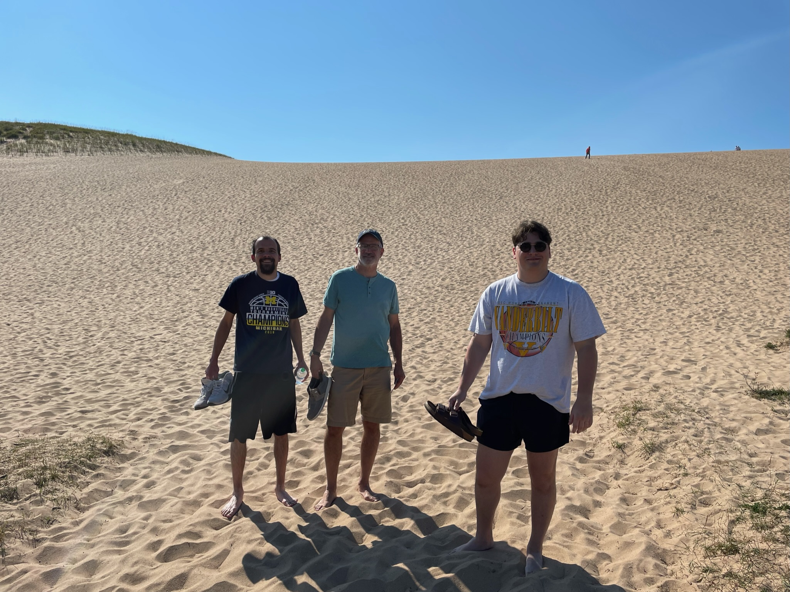
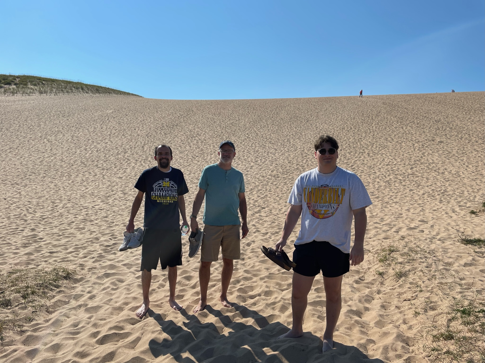

Steve Kays
Hello! My name is Steve Kays. I'm a current Library and Information Science graduate student at Wayne State University. I consider myself a life-long student, and I love how the field of librarianship nurtures that instinct; I also love working with and helping people, meeting their needs. I also have a specific interest in the field of theology. What better way to combine those interests and passions than to aspire to be a theological librarian!
Background Information
I live in Canton, Michigan and have the fortunate opportunity of working in my hometown public library as a Circulation Assistant. I also sub at the Novi Public Library in the same capacity. I also have several other personal interests. I am a self-described film nerd, love being out in nature, and enjoy spending quality time with family and friends.
Hobbies & Interests
- Reading & Learning
- Adding to my Criterion Collection
- University of Michigan and Detroit sports teams
- Going for walks

 
